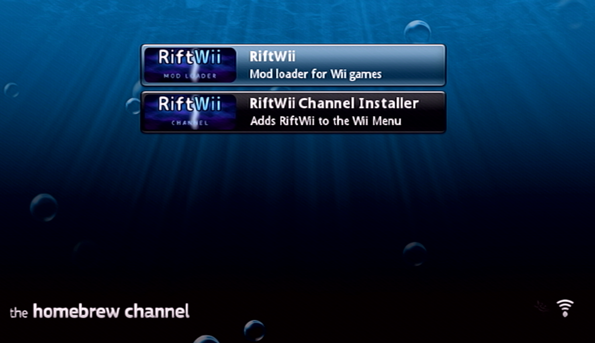
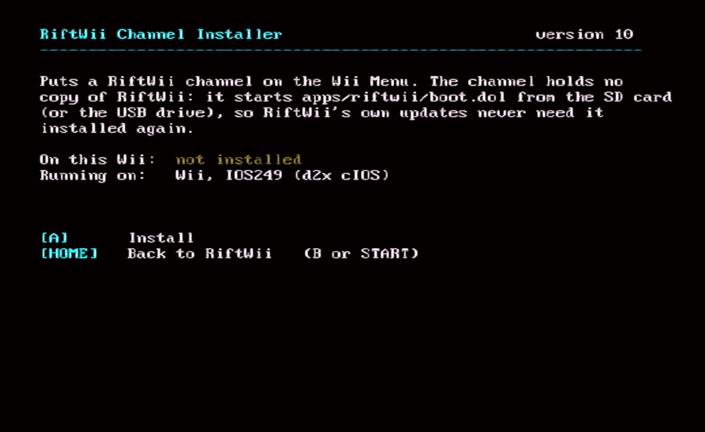
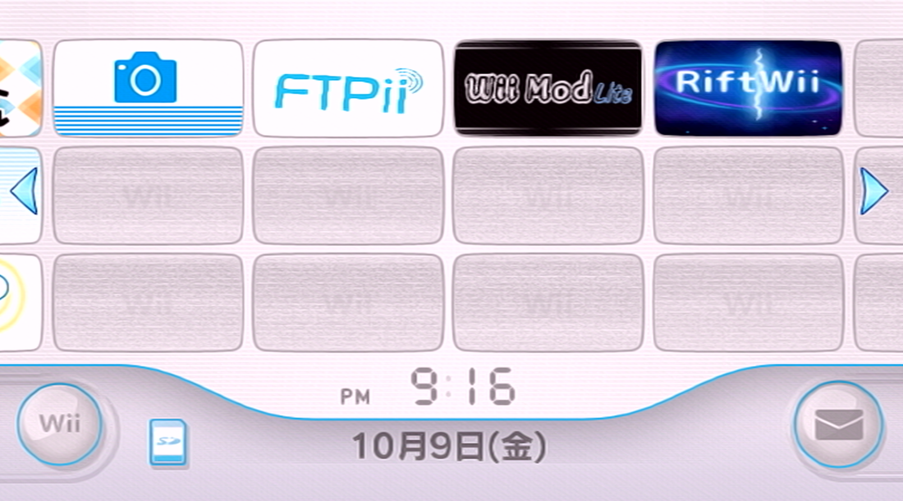

Getting Started
A simple introduction to installing and opening RiftWii.
- A Wii, Wii U or Wii Mini with
the Homebrew Channel
- An SD Card that is formatted
to FAT32
- A USB Drive that is formatted
to FAT32 or WBFS (Optional)
- A computer or device to
download RiftWii
Copy the contents of the
sd-card
folder onto the root of your
SD Card. It should look like:
/apps
- riftwii
- riftwii_channel
games
/riftwii
- themess
riivolution
wbfs
If you have a USB Drive, also copy
the contents of
usb-drives
onto your USB Drive. It should look like:
wbfs
Now that RiftWii is all setup, you're ready to install mods!
Install Riivolution-format Mods
Install Code Mods (Project+, REX, etc.)
Install Cheats
RiftWii is all setup now! You can now launch it via the Homebrew Channel!

Simply open the RiftWii Channel Installer, and press A to install!

All Done!
